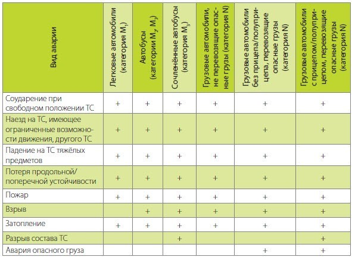

На успех процесса перевозки грузов влияет множество факторов, связанных с погодными условиями, состоянием дорог, несоблюдением режима движения. Совокупность всех факторов может стать причиной аварии. Безопасность транспортировки опасных грузов крайне важна, ведь когда перевозимый груз по своей природе представляет опасность, это, в совокупности с негативными условиями перевозки, может привести к техногенной катастрофе, последствия которой трудно и зачастую невозможно предсказать при отсутствии своевременного информирования. В настоящее время для обеспечения информирования разработано множество систем, позволяющих осуществлять спутниковый мониторинг опасных грузов в процессе перевозки.
Перевозки опасных грузов представляют особую сферу деятельности в транспортной логистике, поэтому существует необходимость обеспечения безопасности транспортировки опасных грузов. С каждым годом объем применения опасных веществ в промышленном секторе по всему миру показывает положительную динамику. При этом существуют предприятия, которые необходимо снабжать такими грузами каждый день во избежание остановки производства или деятельности в целом (строительные компании, больницы, заправочные станции, аэропорты и аэродромы, военные части и другие). Такая технология спутниковой навигации в транспортной логистике как спутниковый мониторинг опасных грузов обязательно применяется в ходе ежедневных поставок. По данным ООН, доля опасных грузов в мировом грузообороте в настоящее время достигает половины. В объеме грузов, перевозимых по России всеми видами транспорта, доля опасных составляет около 20%, примерно 800 млн т. Из них на автомобильный транспорт приходится до 65%, и эти показатели неуклонно растут. Склонность к росту перевозок данного вида грузов автомобильным транспортом объясняется увеличением числа грузовых автотранспортных средств.
Опасный груз – это груз, который в результате транспортного происшествия может нанести вред здоровью или жизни людей и/или окружающей среде. Сюда относятся различные газы, яды, химикаты, пестициды, взрывчатые, легковоспламеняющиеся, токсичные, коррозионные вещества и т.д. Классификация степени опасности груза и определение их особенностей осуществляется по международной классификации ООН, принятой в 2011 г., с которой полностью совпадают номера девяти основных классов опасных грузов и расшифровка, установленные ГОСТ-19433-88.
К транспортным средствам категории N, перевозящим опасные грузы, предъявляется наиболее полный набор требований по автоматическому определению факта аварии, которое может быть осуществлено с помощью спутникового мониторинга опасных грузов, что обусловлено следующими факторами:

Анализ данных МВД России за 2005–2007 гг. о дорожно-транспортных происшествиях, в результате которых погибли или получили ранения люди, с участием транспортных средств категории N, перевозивших опасные грузы, показывает, что тяжесть последствий происшествий при перевозках опасных грузов составила 34 погибших на 100 пострадавших, что более чем в три раза выше, чем в дорожно-транспортных происшествиях, не связанных с такими перевозками.
Оснащение аппаратурой спутниковой навигации транспортных средств поможет наладить спутниковый мониторинг опасных грузов со стороны государства, чтобы снизить количество нарушений ПДД. Контроль повысит эффективность передвижения в потоке машин в больших городах и увеличит уровень безопасности транспортировки опасного груза или пассажиров.
С 1 сентября 2021 г. начало действовать Постановление Правительства от 22 декабря 2020 г. №2216. По указанным в нем требованиям перевозчики пассажиров и опасного груза обязаны установить аппаратуру спутниковой навигации.
Включение в состав бортового устройства средств спутниковой связи необходимо для обеспечения мониторинга в зонах, где отсутствует сотовая связь.
Сообщение с бортового устройства о перевозке опасного груза должно включать следующий набор мониторинговой информации:
Кроме того, необходимо обеспечить возможность передачи следующих данных о перевозке опасных грузов:
В России, как и в большинстве зарубежных стран, разработаны специальные требования и правила безопасности транспортировки опасных грузов, также существуют четко регламентированные требования к порядку совершений промежуточных операций с такими грузами (погрузочно-разгрузочные, хранение, утилизация и т.д.). Порядок спутникового мониторинга опасных грузов определяется Правилами оснащения транспортных средств категорий М2, М3 и транспортных средств категории N, используемых для перевозки опасных грузов, аппаратурой спутниковой навигации, утвержденные постановлением Правительства Российской Федерации от 22 декабря 2020 года N 2216 в соответствии с Федеральным законом “О навигационной деятельности”. Определение порядка транспортировки и регламентация промежуточных операций осуществляются в соответствии с нормами Европейского соглашения дорожного соглашения о транспортировке опасных грузов (ДОПОГ). Данное соглашение было достигнуто в рамках предложенных единых требований по транспортировке опасных грузов, по обеспечению безопасности транспортировки опасных грузов между странами, а также с целью унифицирования и упрощения таможенных процедур. Заключено было соглашение между Европейскими странами по инициативе и при поддержке ООН 9 сентября 1957 года в Женеве.
На основании вышесказанного можно констатировать, что подходы предприятий к реализации логистической деятельности в части транспортировки особо опасных грузов и грузов гражданского назначения существенно отличаются. Транспортировка рассматриваемой категории грузов регламентируется не только международными соглашениями и законами, но и законодательной базой РФ. Она регулярно меняется, что требует от перевозчиков постоянного обновления материальной – технической базы, пополнения и обновления парка транспортных средств, обучения персонала и т.д. Существуют требования к: компании-перевозчику — получение лицензии на осуществление перевозок; автомобильному транспорту, которые требуют установки дополнительного оборудования для осуществления перевозки опасных грузов; персоналу, взаимодействующему с опасными грузами — прохождение обучения, получение лицензии. Таким образом, далеко не каждая организация, занимающаяся транспортной логистикой, способна оказывать услуги по перевозке именно опасных грузов.
Источники:
1)СПЕЦИФИКА РЕАЛИЗАЦИИ ЛОГИСТИЧЕСКОЙ ДЕЯТЕЛЬНОСТИ ПРЕДПРИЯТИЙ ПРИ ТРАНСПОРТИРОВКЕ ОПАСНЫХ ГРУЗОВ,
2)Внимание — опасные грузы!, Виталий Комаров, Сергей Гараган — Вестник ГЛОНАСС №2(18) за Июнь месяц 2014 года
3)Переоборудование ДОПОГ от компании ЭРА-ГЛОНАСС
4)ДОПОГ с измененной структурой, действующее с 1 января 2019 года — Организация Объединенных Наций, 2019 год
5) ГОСТ-19433-88
6)Правила оснащения транспортных средств категорий М2, М3 и транспортных средств категории N, используемых для перевозки опасных грузов, аппаратурой спутниковой навигации